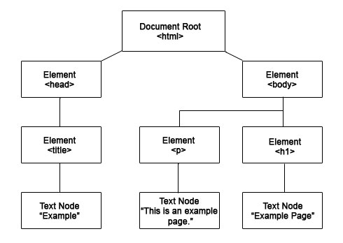

DOM
The DOM (Document Object Model) is an API that exposes the elements of HTML and XML documents as programming language objects. The structure of the DOM for any document resembles the actual structure of the markup of the document. A web developer can programmatically manipulate the DOM to modify a web page, before or while it is viewed by the user.
The most common programming language used in the DOM is JavaScript, which is used on most websites. Using JavaScript allows for dynamic changes to be made to the DOM, including hiding, moving, and animating certain HTML elements (such as text, tables, images, and entire divisions).
In the past, the DOM had fundamental differences between browsers, but today has become much more standardized, allowing for easier cross-browser scripting to be performed by developers.
A DOM example using HTML
Consider the following HTML document:
<html> <head> <title>Example</title> </head> <body> <h1>Example Page</h1> <p>This is an example page.</p> </body> </html>
The DOM for this document includes all of the elements and any text nodes in those elements. The code in the previous example creates an object hierarchy as shown below.

For each element under the document root (<html>), there is an element node, and these element nodes have text nodes containing the text that is in the element. If there were an element with attributes, an attribute node would be created for that element and any text for the attribute would create a text node under that attribute node.